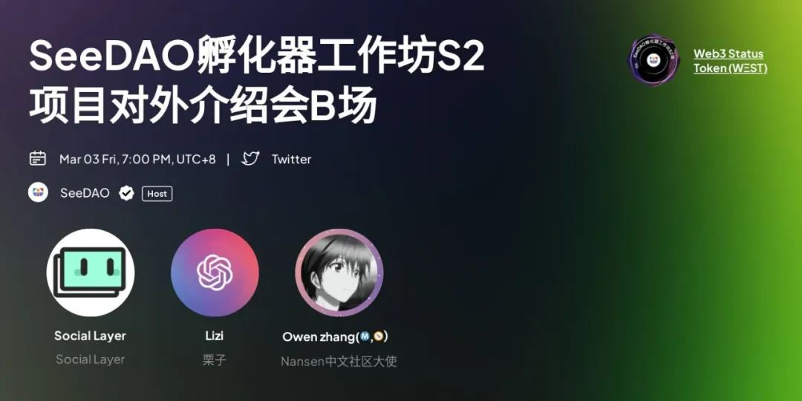
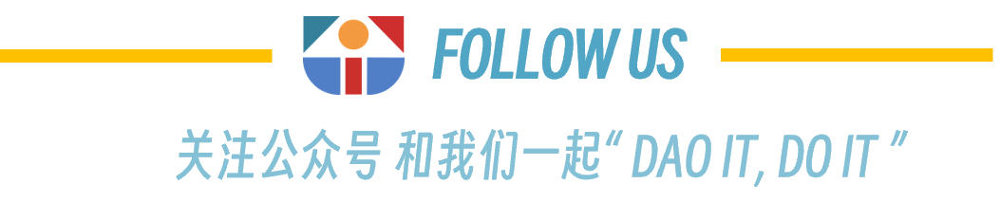

TLDR:
当发生一种我称之为“自我构建”的现象时，去中心化技术是有弹性的。“自我构建”是指当人们在参与设计、拥有、运营、治理或者维护他们自己的基础设施以保持弹性。这是人们围绕他们自己的行动与共同目的或者目标之间的界限，表现在技术和制度的基础设施当中。自我构建来自于适应和继续根据自己的政治偏好进行自我治理的集体意愿。这种做法中的弹性是有背景的，与一个人的目的或目标、威胁模式和脆弱性有关。因此，自我构建的动机是通过技术和社会手段，为特定目的和特定威胁进行自我治理的政治意愿。去中心化技术社区的自我构建是在各种情况下，通过各种方法，包括算法和组织结构（如 DAO），全栈的基础设施（如硬件），以及制度的基础设施。人们如何集体表达其政治目标，识别其威胁模式，并在软件代码和协调规则（链上或链下）中明确表达这一点，以根据该目标进行组织和调整，这决定了组织的弹性。当没有自我构建，人们无法根据自己的目标为自己的行为设定界限时，弹性就会崩溃。
由 jramos10 通过 Unsplash 免费提供的“营造空气”
序言
去中心化技术通常被认为是安全的、自主的和“有弹性的”。这个多年的研究项目旨在通过基础设施研究视角、历史分析和民族志观察的定性混合方法，以及对各种社区级的去中心化技术的开发人员、实施人员和用户的访谈，并通过识别和追踪漏洞，来深入了解去中心化技术在弹性方面的可承受性。在这里，我认为弹性是指 "社会技术系统对威胁或危机的适应性和可塑性"，以突出人类和技术之间的动态、持续的调整，因为人们在特定的环境中追求他们的目标，或在不确定性下的灵活性。这项研究是在“去中心化技术”的现场这一分散的、短暂的数字第一的场景下进行的，以调查和观察弹性的概念和去中心化技术社区在概念、设计、开发、实施和使用方面的基础设施实践。我展示了在去中心化技术中什么是弹性，它何时以及如何发生，以及在什么条件下受到限制或挑战。
我展示了弹性是如何被构思的，是如何使用去中心化技术来实施的，以及参与者在使用它来回答“去中心化技术是否具有弹性”这一首要研究问题时的经验（或没有经验）。我发现去中心化技术的弹性是通过“自我构建”来理解和实现的。
通过自我构建，去中心化技术的弹性是由人们围绕他们自己的行动，以及与特定的、共同目标而设置的界限决定的。正是在对去中心化技术社区的基础设施研究中，发现了去中心化技术中的弹性，是可以“自我构建”的。良好的信息基础设施能够适应不断变化的环境（Star&Bowker，2010）。基础设施是一个“正在进行”的词，弹性是一种动态涌现的现象，而不是静态的最终状态或结果。动词“去构建基础设施”表示构建和改变基础设施的活动、集成材料、工具、方法和实践的过程（Star&Bowker，2010）。因此，“构建基础设施”是一个持续的过程，这些过程是渐进的、迭代的和长期的（Karasti 等人，2010）。基础设施作为一种”关系属性“的出现，与其用途密不可分，当其用途与一个人或社区功能使用相联系时，它就存在或 “是”（Star & Ruhleder, 1996）。去中心化技术中的行为和交互的边界是通过技术过程和社会过程来构建的，从而形成技术和制度的基础设施。自身构建使人们能够自愿参与到基础设施的规则当中，这使得与共同目标有关的适应性和责任性得以实现。自我构建所提供的代理权有助于提高在内部或外部危机中的适应能力，而不至于偏离共同目标，导致基础设施崩溃。
自我构建是为什么去中心化社区在某些情况下具有适应性和弹性的原因 - 当人们能够集体表达其政治目标、识别其威胁模型，并在软件代码和协调规则（链上或链下）中明确表达这一点，并根据该目标进行组织和调整。这取决于人们如何清楚地表达他们的目的和目标，识别他们的威胁模型和自己的脆弱性，并在基础设施规则中表达出来。如果一个群体的目标与其基础设施规则之间存在脱节，自我构建的能力就会受到限制（就基础设施的结构、拥有、运营或维护能力而言），弹性就会崩溃。
自我构建也是为什么去中心化技术从业者，认为中心化的数字平台和基础设施不具有弹性的原因。正如一位研究参与者所说，"谁控制了基础设施，谁就控制了社会"。所暗示的是，这一定是 "我们"。
这一洞察提供了三个关键信息，即：去中心化技术的弹性与“自我构建”有关，自我构建是政治性的，如果没有自我构建，弹性就会崩溃。
去中心化技术的弹性在于‘自我构建’
去中心化技术的弹性与“自我构建”有关，这意味着对设计、拥有、运营、管理和维护自己的基础设施的认识和参与。这是人们围绕自己的行动和共同目标所划定的界限，然后在技术和制度的基础设施中表达出来。
在这种情况下，通过撰写自己的基础设施规则，并让制度按照这些规则行事，可以增强组织弹性。这允许人们对自我构建和自我治理负责。在这种背景下，自治是指能够遵守基础设施规则，无论是技术性还是制度性的 - 作为一套政治、法律和文化制度，构成经济活动和治理的背景，并在需要时启用或约束其运作或调整它们。
在这种实践中，弹性与人的目的或目标、威胁模型和脆弱性相关。这导致了去中心化技术中产生了过多可能的威胁和漏洞。在这方面，自我构建的动机是“对基础设施的意愿”。基础设施的意愿是政治的、集体的、强烈的驱动目的或愿望，即通过基础设施的手段进行自我治理，并对抗特定的威胁，这是由特定的世界观所决定的。尽管在时间、精力、成本、知识获取和风险方面存在潜在的不便、效率成本和所需资源，但自我构建的意愿对于激励自我构建的实践至关重要。即使基础设施的意愿是出于功能性目的，但其背后通常也有政治动机。
去中心化技术社区通过在各种环境下自我构建、应对各种威胁和通过各种方法来实现弹性。去中心化技术社区的自我构建实践包括算法和组织结构（如DAO），我称之为“全栈自我构建”（如硬件），以及制度基础建设（如指导基础设施实践的治理工具和流程（Nabben，2022））。
自我构建既可以增强弹性，但是也创造了新的漏洞。去中心化技术中的这些威胁和攻击可能是外生的，来自社区外部的攻击，也可能是内生的，来自内部社区权力或力量。当自我构建没有发生，人们无法根据自己的目标设定自己的行动边界时，弹性就会崩溃。这将在第2点中进一步探讨。第二个发现是，自我构建是政治性的。
自我构建是政治性的
自身构建的动机是，通过数字手段为特定目的和对抗特定威胁进行自我治理的政治意愿。政治目的被铭刻在自我构建的基础设施中。然而，在去中心化的技术中，基础设施的政治决定了生产新事物的弹性要求。去中心化的基础设施揭示了合理的政治形式是，人们可以自我治理。去中心化技术旨在通过编码治理的行动和互动规则，来明确构建政治理性。政治叙事塑造了去中心化技术的目的，并转化为基础设施如何运作的技术要求。
从一开始，去中心化技术就反映了政治愿望，而不是公钥密码学的数学发明，或个人崇拜（例如，比特币创始人中本聪的身份至今仍是一个谜）（Nabben，2021）。每一个案例研究都揭示了政治是如何激励、影响自我构建的每一个实例，从威胁感知、到技术解决方案和制度形态。
通过自我构建的政治模式，新的基础设施形态出现了，新的呼声被整合到政治空间中（关于这一点，很快将会在一篇即将发表的论文中提到）。在发生自我构建的情况下，具有政治影响力的利益相关者之中，新的政治势力正在出现。基础设施建设是通过新的组织结构进行的，包括算法、软件、硬件和人的物质性。政治变革不是通过一个项目或团体的努力发生的，而是通过一个去中心化的运动，每个模块产生的东西，这些东西都可以被当作可组合的基础设施，而被其他模块整合。通过这些物质实体，新事物得以涌现，从公共区块链，到分布式筹资机制，到抗审查的博客，到开源的微芯片分配和整合。
这些基础设施不仅从设计、维护到使用都与政治密不可分，而且政治只是一个特性，而不是一个错误，这体现在塑造威胁模型、设计和基础设施所能承受的弹性方面。人们如何集体表达其政治目标，识别其威胁模式，并在软件代码和协调规则（链上或链下）中明确表达这一点，以根据该目标进行组织和调整，这决定了组织的弹性。这意味着弹性在很大程度上是由系统的内部因素（内生的）决定的，例如，目标、规则、流程、软件代码和社区规范。因此，只有技术之外的力量才能控制组织弹性。
尽管这些定制的、去中心化基础设施可以通过所描述的自我构建实践，来实现高度的活力和适应性，但它们在实践中并不总是如预期般有效。这将在下面的第三部分中进行探讨。
当自我构建没有出现的时候，
组织弹性就会崩溃
当一个基础设施的政治和技术目的变得不一致时，组织弹性就会受到损害。调查为什么在使用去中心化技术时组织具有弹性，这突出了基础设施的社会和技术组成部分之间不可分割的、共同构建的的相互作用。
根据定义，社会技术系统中基础设施的社会和技术形态之间的相互作用是密不可分的，因此，无论是社会（如人、关系和结构），还是技术（如硬件、软件和流程），都不能孤立地考虑（Golden，2013）。在每个案例研究中，制度基础设施在产生和管理适应性以增强组织弹性方面的重要性和作用都得到了强调，它是一套政治、法律和文化制度，构成了经济活动和治理的背景，使其能够或限制其运作（Hinings, et. al., 2017）。围绕着技术使用所需的社会协调层，指导围绕数据所有权、治理、存储和数据维护的实施过程和实践，以桥接基础设施规模化的"网关时刻"（Edwards, et. al., 2009）、对环境变化的持续适应性，并在当地环境中服务人们的需求（工作论文草案见 Nabben, 2022。全文已被 IEEE 接受，很快将会出版）。基于这一见解，我认为将基础设施的技术操作与构建和治理（制度）基础设施的社会过程分开，将会破坏组织弹性。
自我构建作为一个正在进行的单词，意味着去中心化技术并不是独立于使用它们的人类而具有弹性。弹性并不是指技术上的完备，而是指基础设施只有在使用时才有意义，而在使用时也会崩溃。这意味着描述去中心化技术是有弹性的，和在实践中如何通过技术和社会手段提供组织弹性之间，是有区别的。在技术主导或技术决定论的工程文化中，如公共区块链协议，人们通常认为基础设施的技术层优于脆弱的、可贪污腐败的、社会权力和人类（Filippi, & Loveluck, 2016）。
在一些去中心化技术社区成员的技术决定论观点中，在通过算法自治消除社会形态的“治理自动化”以实现“治理最小化”的叙述中，一个系统的社会形态是脆弱的，必然会走向崩溃（Ehrsam, 2020）。然而，脆弱性可能发生在基础设施的社会、技术、经济、甚至法律和环境层面，只有多维度的弹性方式才能说明识别和解决这些问题所需的适应性。事实上，社会形态确实也可以破坏弹性，但也需要它们来制造弹性。这取决于当前威胁模型后果的严重程度。例如，一位工程师问我关于去中心化存储的研究成果，关于基础设施在促进弹性方面的作用，“那么，崩溃的是社会层，而不是技术层？”。这句话忽略了一点，即弹性不是来自于基础设施，而是来自支持人类能力的基础设施。人们如何参与塑造、使用或重新利用基础设施是一个积极的适应过程，它影响并决定了弹性。
在实践中，不可能存在技术层有弹性，而社会层没有弹性，因为基础设施的社会和技术系统是共同构建的。正是通过使用，弹性才得以立足于环境，依赖于社会形态，并适应（或不适应）与技术和社区的目的相关的外部威胁和内部脆弱性的挑战。当人们认为去中心化技术具有弹性时，他们往往没有考虑到为实现目标进行自我构建的实际经验的复杂性。中心化技术也是如此。因为公司宣传的叙事，我们也认为它们同样具有弹性。在这种情况下，人们也会使用它们进行自我构建（因为使用它们的目的并不是最初设想的那样，甚至可能在过程中对它们进行改造）。在去中心化技术中，弹性发挥的不同作用，与规则的代理有关。
社会和技术都可以共同构建或破坏弹性，正如 GitcoinDAO 中女巫攻击机器人和机器学习防御之间的相互作用一样。去中心化的技术，作为点对点或无权限的参与性基础设施，从本质上来说，没有“嵌入”社区的“组织安排”（Star, 1999）就不会存在。基础设施是“人类组织的一部分”（Star, 1999）。通过社会层，去中心化基础设施也可以被组织和重新组织（适应），以提高弹性。制度基础设施的社会层提供了适应性，在面对不断变化的环境时，可以考虑和改变制度的规则。
将去中心化技术中的自我构建与中心化基础设施区分开来的另一个方面是，制度层面不是从外部强加给系统的，而是通过“自我治理”现象内生出来的。基础设施从根本上说是关系性的，它为人们在实践中出现，与活动和结构相连。它由静态和动态的元素组成，每种元素对于确保系统的功能性都同样重要。基础设施的结构化说明了基础设施的社会和组织层面。这种理解需要采用长期而非即时的时间框架，不仅从人与技术组成部分的角度，而且还要从一组相互关联的社会、组织和技术组成部分或系统的角度来思考基础设施（Bowker等人，2010年）。在这种情况下，弹性是以过程为导向的，是一种持续的、动态的、适应性的现象，而不是以结果为导向的。
自我构建的未来
在之前的历史研究中，我探讨了去中心化技术中弹性概念的起源，在本篇文章剩余部分，我将注意力转向去中心化技术的民族志未来，以“解开”和“未解决”自我构建中的弹性概念。
我希望很快与你分享更多。
致谢：
感谢我的导师，Ellie Rennie 教授和 Chris Berg 副教授，以及 RMIT 区块链创新中心的同事和合作者（特别是 Michael Zargham 和 BlockScience 的团队），如果没有他们，这些研究就不那么有趣了。还有许多别的联系人、社区和研究参与者，他们非常友善地参与了访谈和观察，并为这些发现做出了贡献。
也感谢那些通过订阅 Substack 上的博客以及通过 NFT 形式收藏我在 Mirror.xyz 上的作品来支持和鼓励我作品的读者。

作者：Kelsie Nabben
翻译：xunyang
校对：Shawn wu
排版：Bo
审核: Suannai



